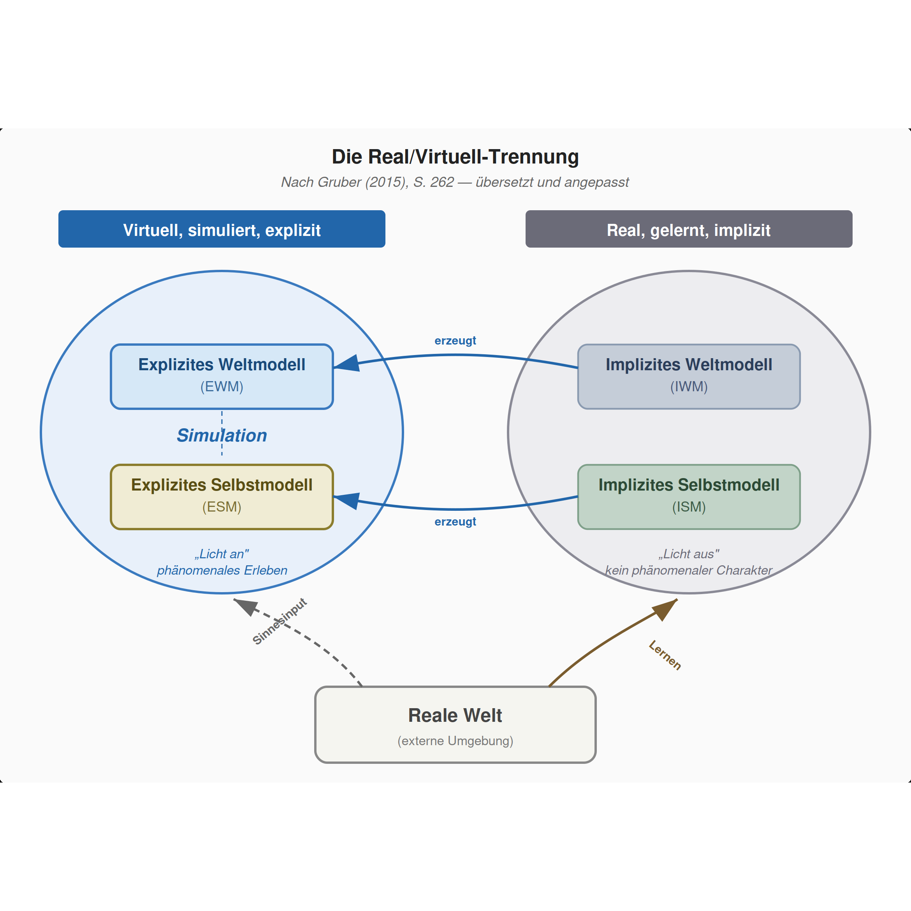
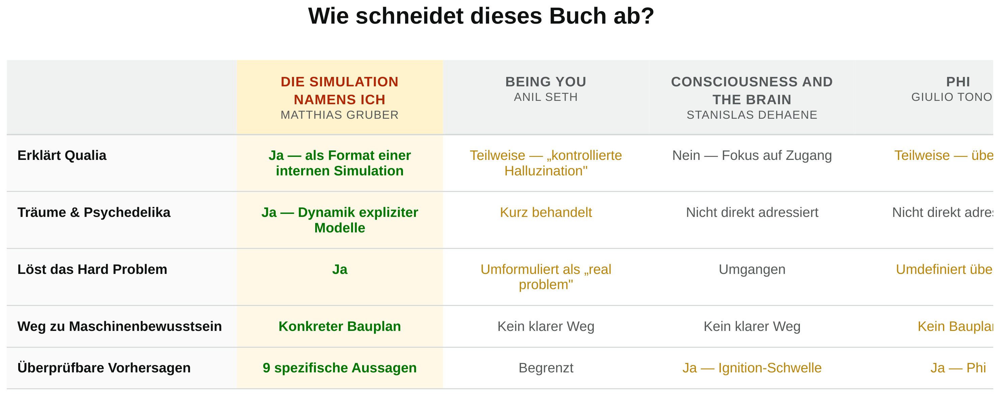

Das Gehirn unterhält zwei Arten von Modellen: Implizite Modelle speichern alles Gelernte (synaptische Gewichte, motorische Programme, Körperschema). Explizite Modelle erzeugen bewusstes Erleben in Echtzeit.
Die implizite Seite ist „Licht aus" — kein phänomenales Erleben, nur gelernte Struktur. Die explizite Seite ist „Licht an" — die lebhafte, gefühlte Simulation, die man für die Realität hält.
Diese Architektur erklärt Narkose, Träume, psychedelische Zustände und Split-Brain-Phänomene. Das Hard Problem löst sich auf, weil Qualia keine mysteriösen Zusätze zu physischen Prozessen sind — sie sind das Format der Simulation selbst, virtuelle sensorische Qualitäten, die nur innerhalb der expliziten Modelle existieren.
